本文主要介绍了当前文字识别的一些理论知识，包括背景介绍、算法分类和部分经典论文思路，是自己参加百度《动手学OCR·十讲》公开课的记录。
目录
简介
文字识别是 OCR (Optical Character Recognition) 中的一个子任务，其目标是识别出一个文本区域内的文字，通常文字识别在文字检测之后。具体来说，文字识别模型的输入为一张文本行图片，输出为该图片中包含的文字内容。此外，文字识别模型还会输出置信度以及对齐的位置信息，可视化结果如下图所示： 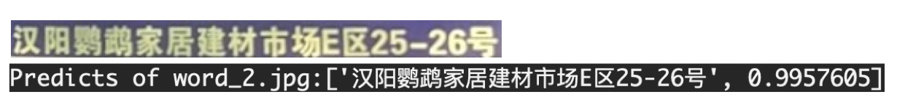 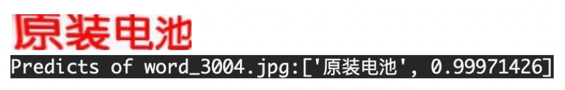
文字识别的应用场景很多，有文档识别、路标识别、车牌识别、证件识别等，根据实际场景可以把文字识别任务分为两个大类：规则文字识别和不规则文字识别。
规则文字识别：主要指印刷字体、扫描文本等，这些图片中文本大致处在水平线位置，且字体比较统一；
不规则文字识别：往往出现在自然场景中，且由于文本曲率、方向、变形等方面差异巨大，文字往往不在水平位置，存在弯曲、遮挡、模糊等问题。
下图展示的是 IC15 和 IC13 的数据样式，它们分别代表了不规则文本和规则文本。可以看出不规则文本往往存在扭曲、模糊、字体差异大等问题，更贴近真实场景，也存在更大的挑战性。目前学术界主要关注不规则的文字识别。 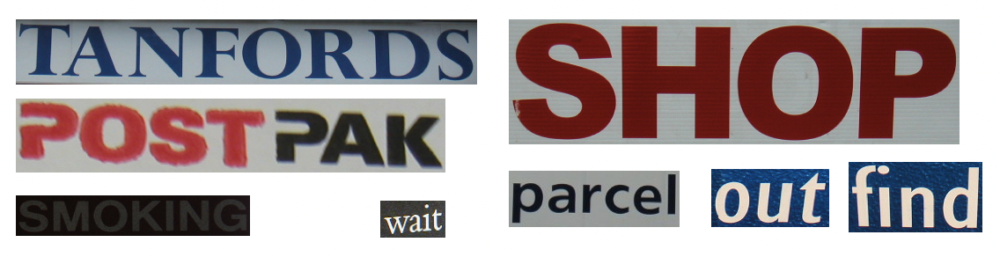
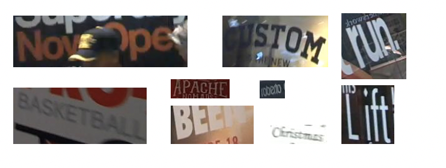 不同的识别算法在对比能力时，往往也在这两大类公开数据集上比较。此外，目前主流的英文数据集主要包括如下几个： 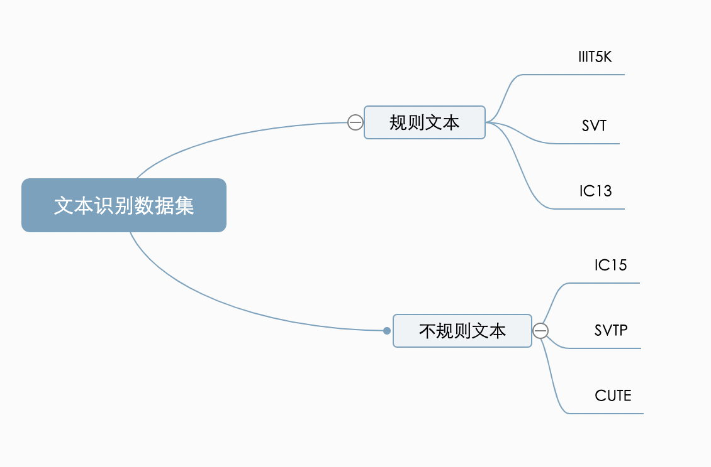
文字识别算法分类
传统的文字识别算法包含三个步骤：图像预处理、字符分割和字符识别。这类算法需要对特定场景进行建模，一旦场景变化就会失效，算法鲁棒性较差。面对复杂的文字背景和场景变动，基于深度学习的算法具有更好的性能。当前深度学习文字识别算法如下图所示，可以分为四个阶段： 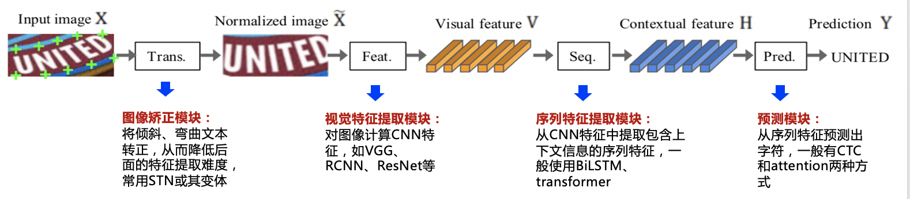
我们整理了当前主流的算法类别和主要论文，参考下表：
| 算法类别 | 主要思路 | 主要论文 |
|---|---|---|
| 传统算法 | 滑动窗口、字符提取、动态规划 | - |
| CTC | 基于ctc的方法，序列不对齐，更快速识别 | CRNN, Rosetta |
| Attention | 基于attention的方法，应用于非常规文本 | RARE, DAN, PREN |
| Transformer | 基于transformer的方法 | NRTR, Master, ABINet |
| 校正 | 校正模块学习文本边界并校正成水平方向 | RARE, ASTER, SAR |
| 分割 | 基于分割的方法，提取字符位置再做分类 | Text Scanner， Mask TextSpotter |
规则文字识别
规则文字识别的主流算法有两种：基于 CTC (Conectionist Temporal Classification) 的算法和 Sequence2Sequence 算法，两者的区别主要在解码阶段。基于 CTC 的算法会将编码后的序列送入 CTC 进行解码；而基于 Sequence2Sequence 的方法则是把序列接入循环神经网络(Recurrent Neural Network, RNN)模块进行循环解码。
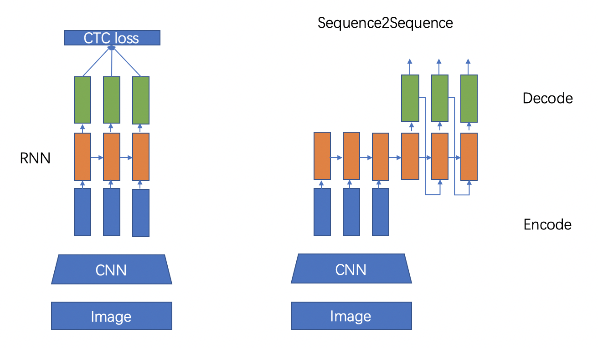
基于CTC的算法
基于 CTC 最典型的算法是 CRNN (Convolutional Recurrent Neural Network)1，该模型使用ResNet、MobileNet、VGG等主流的卷积网络提取特征。由于文字识别任务的特殊性，输入数据中存在大量的上下文信息，卷积神经网络相对来说只能关注于局部信息，缺乏长依赖的建模能力，因此仅使用卷积网络很难挖掘到文本之间的上下文联系。为了解决这一问题，CRNN 算法引入了双向 LSTM (Long Short-Term Memory) 来增强上下文建模，并通过实验证明双向 LSTM 模块可以有效提取图片中的上下文信息。最终将输出的特征序列输入到CTC模块，直接解码序列结果。CRNN 结构被验证有效，并广泛应用在文字识别任务中。Rosetta2是FaceBook提出的识别网络，由全卷积模型和 CTC 组成。Gao Y3等人使用CNN卷积替代LSTM，参数更少，性能提升精度持平。 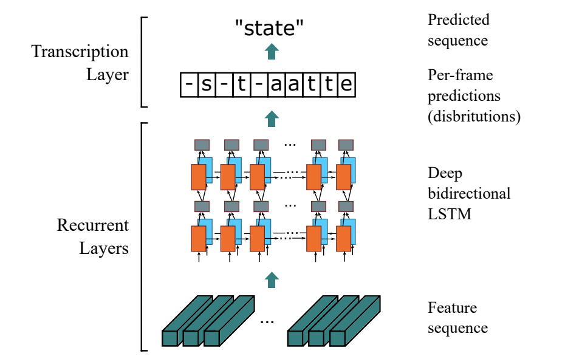
Sequence2Sequence 算法
Sequence2Sequence 算法是由编码器 Encoder 把所有的输入序列都编码成一个统一的语义向量，然后再由解码器 Decoder 进行解码。在解码器 Decoder 解码的过程中，不断地将前一个时刻的输出作为后一个时刻的输入，循环解码，直到输出结束符为止。一般编码器是一个 RNN 网络，对于每个输入的词，编码器输出向量和隐藏状态，并将隐藏状态用于下一个输入的单词，循环得到语义向量；解码器是另一个 RNN，它接收编码器输出向量并输出一系列字符。受到 Sequence2Sequence 在翻译领域的启发， Shi4提出了一种基于注意的编解码框架来识别文本，通过这种方式，rnn 能够从训练数据中学习隐藏在字符串中的字符级语言模型。 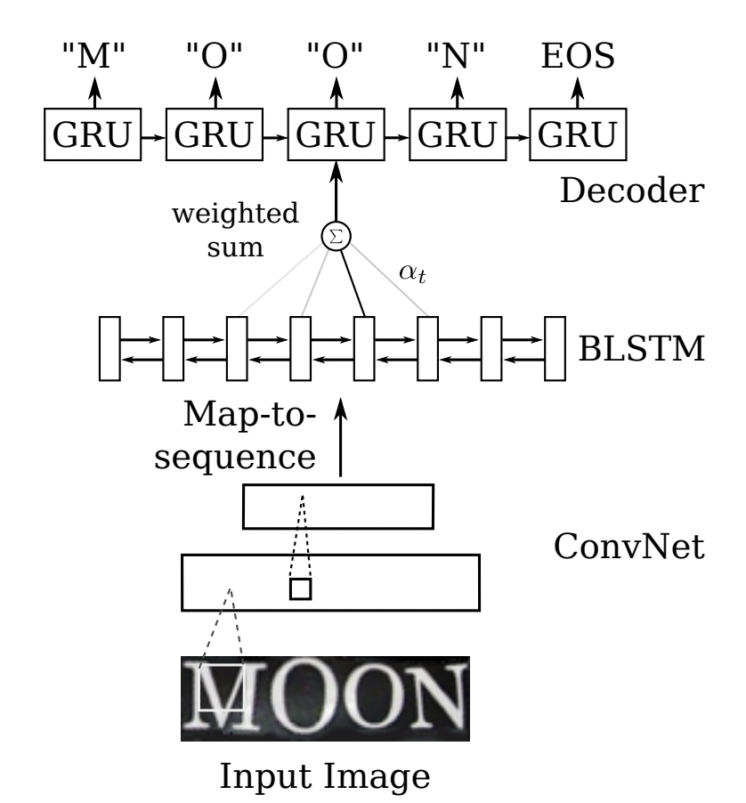 以上两种算法在规则文本上都有很不错的效果，但由于网络设计的局限性，这类方法很难解决弯曲和旋转的不规则文字识别任务。为了解决这类问题，算法研究人员在以上两类算法的基础上提出了一系列改进算法。
不规则文字识别
不规则文字识别算法可以被分为四类：基于校正的方法、基于 Attention 的方法、基于分割的方法以及基于 Transformer 的方法。
基于校正的方法
基于校正的方法利用一些视觉变换模块，将非规则的文本尽量转换为规则文本，然后使用常规方法进行识别。
RARE 模型首先提出了对不规则文本的校正方案，整个网络分为两个主要部分：一个空间变换网络 STN (Spatial Transformer Network) 和一个基于 Sequence2Squence 的识别网络。其中 STN 就是校正模块，不规则文本图像输入到 STN，通过 TPS (Thin-Plate-Spline) 变换成一个水平方向的图像，该变换可以一定程度上校正弯曲、透射变换的文本，校正后送入序列识别网络进行解码。
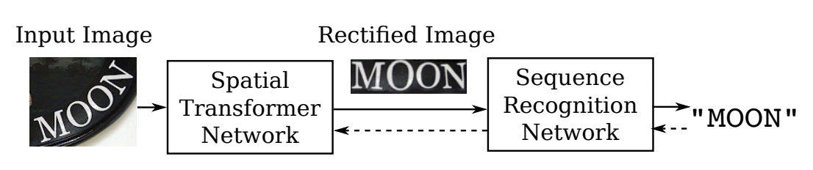 RARE 论文指出，该方法在不规则文本数据集上有较大的优势，特别比较了 CUTE80 和 SVTP 这两个数据集，相较 CRNN 高出5个百分点以上，证明了校正模块的有效性。ASTER5同样结合了空间变换网络(STN)和基于注意的序列识别网络的文字识别系统。
基于校正的方法有较好的迁移性，除了 RARE 这类基于 Attention 的方法外，STAR-Net6将校正模块应用到基于 CTC 的算法上，相比传统 CRNN 也有很好的提升。
基于Attention的方法
基于 Attention 的方法主要关注于序列之间各部分的相关性，该方法最早在机器翻译领域提出，其认为在文本翻译的过程中当前词的结果主要由某几个单词影响的，因此需要给有决定性的单词更大的权重。在文字识别领域也是如此，在解码时，选择恰当的上下文信息来生成下一个状态，可以得到更准确的结果。
R2AM7 首次将 Attention 引入文字识别领域，该模型首先通过递归卷积层提取图像特征，然后利用隐式学习到的字符级语言统计信息通过递归神经网络解码输出字符。在解码过程中引入了Attention 机制选择性的给予不同区域图像特征不同的权重，从而更加准确识别出文字。
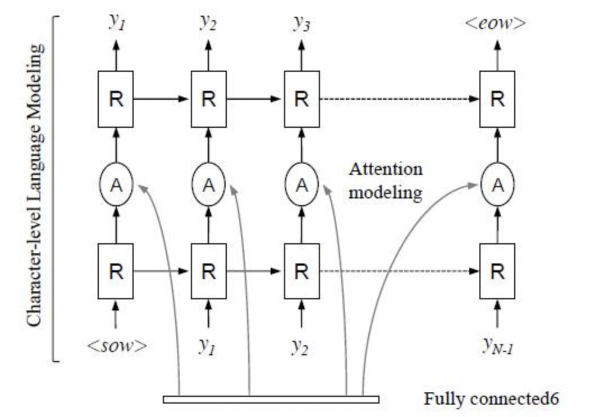 后续有大量算法在 Attention 领域进行探索和更新，例如 SAR8 将1D attention 拓展到2D attention 上，校正模块提到的 RARE 也是基于Attention的方法。实验证明基于 Attention 的方法相比 CTC 的方法有很好的精度提升。
基于分割的方法
基于分割的方法是将文本行的各字符作为独立个体，相比与对整个文本行做矫正后识别，识别分割出的单个字符更加容易。它试图从输入的文本图像中定位每个字符的位置，并应用字符分类器来获得这些识别结果，将复杂的全局问题简化成了局部问题解决，在不规则文本场景下有比较不错的效果。然而这种方法需要字符级别的标注，数据获取上存在一定的难度。Lyu9等人提出了一种用于单词识别的实例分词模型，该模型在识别部分使用了基于 FCN (Fully Convolutional Network) 的方法。CA-FCN10从二维角度考虑文字识别问题，设计了一个字符 attention FCN 来解决文字识别问题，当文本弯曲或严重扭曲时，该方法对规则文本和非规则文本都具有较优的定位结果。
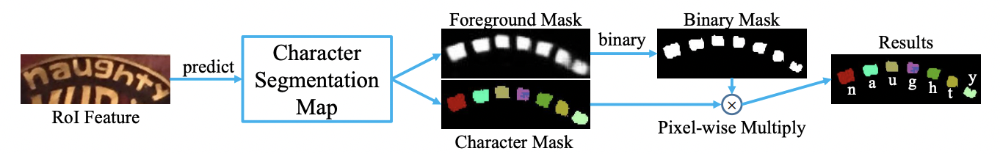
基于Transformer的方法
随着 Transformer 的快速发展，分类和检测领域都验证了 Transformer 在视觉任务中的有效性。如规则文字识别部分所说，CNN 在长依赖建模上存在局限性，Transformer 结构恰好解决了这一问题，它可以在特征提取器中关注全局信息，并且可以替换额外的上下文建模模块（LSTM）。在文字识别领域中，一些算法使用 Transformer 的 Encoder 结构和卷积共同提取序列特征，也有一部分算法使用 Transformer 的 Decoder 模块解码，相比传统 RNN 可获得更强的语义信息，同时并行计算具有更高的效率。
SRN11算法将 Transformer 的 Encoder 模块接在 ResNet50 后，增强了2D 视觉特征。并提出了一个并行注意力模块，将读取顺序用作查询，使得计算与时间无关，最终并行输出所有时间步长的对齐视觉特征。此外 SRN 还利用 Transformer 的 Eecoder 作为语义模块，将图片的视觉信息和语义信息进行融合，在遮挡、模糊等不规则文本识别上有较大的提升。
NRTR12使用了完整的 Transformer 结构对输入图片进行编码和解码，只使用了简单的几个卷积层做高层特征提取，在文字识别上验证了 Transformer 结构的有效性。
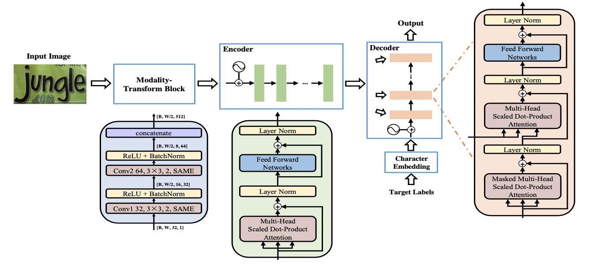 SRACN13使用 Transformer 的解码器替换LSTM，再一次验证了并行训练的高效性和精度优势。
Vision-LAN14模型在视觉空间中对第i个字符视觉信息准确地遮挡，然后再用词级别标签进行监督，让视觉模型在没有第 i 个字符视觉信息的前提下，实现完整的词级预测，直接在视觉空间中实现语言建模过程。具体而言，Vision-LAN 在训练阶段预测被遮挡的字符，训练视觉模型主动学习视觉上下文中的语言信息。在测试阶段，当存在视觉信息遮挡、噪声大的问题时，视觉模型自适应地考虑视觉空间中的语言信息以进行特征增强。Vision-LAN 模型包括三部分，特征提取网络，掩码语言感知模块（Masked Language Aware Module）和视觉推理模块（Visual Reasoning Module）。训练阶段，通过特征提取网络得到视觉特征，接着 MLM 模块输入视觉特征以及字符索引，通过弱监督的方法在对应字符索引的位置生成掩码 Mask 。该模块主要用来模拟视觉信息字符遮挡的情况。VRM 模块输入带遮挡的文本图片，通过在视觉空间捕获长距离的信息，预测对应的文本行识别内容。 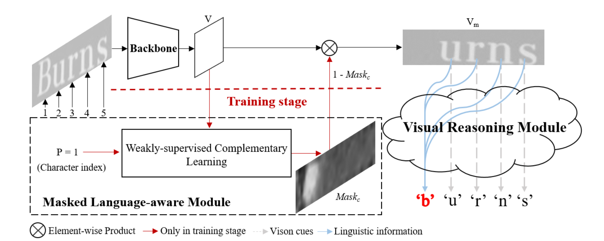
在测试阶段，移除 MLM 模块，只使用 VRM 模块用于文本识别。由于无需额外的语言模型即可获取语言信息和视觉特征，Vision-LAN 可以零计算成本即获得语言信息。
思考
- 骨干网络方面：借鉴 Vision-LAN 模型思路，训练一个包含语言信息的视觉模型；SAR15中的2D attention是否可以进一步借鉴？
- 数据增广方面：
- 色彩：色彩抖动、随机反色等；
- 噪声：高斯模糊、运动模糊、高斯噪声、Cutout等；
- 几何形变：行切除、TIA16、旋转、缩放等；
- 图像尺度：其他输入尺寸、多尺度等。
- 损失函数方面：Enhanced CTC loss 损失函数改进；CenterLoss 强化特征之间的差异，解决形似字分类困难的问题。
- 推理加速方面：U-DML 改进知识蒸馏策略。
参考文献
Shi, B., Bai, X., & Yao, C. (2016). An end-to-end trainable neural network for image-based sequence recognition and its application to scene text recognition. IEEE transactions on pattern analysis and machine intelligence, 39(11), 2298-2304.↩︎
Fedor Borisyuk, Albert Gordo, and Viswanath Sivakumar. Rosetta: Large scale system for text detection and recognition in images. In Proceedings of the 24th ACM SIGKDD International Conference on Knowledge Discovery & Data Mining, pages 71–79. ACM, 2018.↩︎
Gao, Y., Chen, Y., Wang, J., & Lu, H. (2017). Reading scene text with attention convolutional sequence modeling. arXiv preprint arXiv:1709.04303.↩︎
Shi, B., Wang, X., Lyu, P., Yao, C., & Bai, X. (2016). Robust scene text recognition with automatic rectification. In Proceedings of the IEEE conference on computer vision and pattern recognition (pp. 4168-4176).↩︎
Baoguang Shi, Mingkun Yang, XingGang Wang, Pengyuan Lyu, Xiang Bai, and Cong Yao. Aster: An attentional scene text recognizer with flexible rectification. IEEE transactions on pattern analysis and machine intelligence, 31(11):855–868, 2018.↩︎
Star-Net Max Jaderberg, Karen Simonyan, Andrew Zisserman, et al. Spatial transformer networks. In Advances in neural information processing systems, pages 2017–2025, 2015.↩︎
Lee C Y , Osindero S . Recursive Recurrent Nets with Attention Modeling for OCR in the Wild[C]// IEEE Conference on Computer Vision & Pattern Recognition. IEEE, 2016.↩︎
Li, H., Wang, P., Shen, C., & Zhang, G. (2019, July). Show, attend and read: A simple and strong baseline for irregular text recognition. In Proceedings of the AAAI Conference on Artificial Intelligence (Vol. 33, No. 01, pp. 8610-8617).↩︎
P. Lyu, C. Yao, W. Wu, S. Yan, and X. Bai. Multi-oriented scene text detection via corner localization and region segmentation. In Proc. CVPR, pages 7553–7563, 2018.↩︎
Liao, M., Zhang, J., Wan, Z., Xie, F., Liang, J., Lyu, P., ... & Bai, X. (2019, July). Scene text recognition from two-dimensional perspective. In Proceedings of the AAAI Conference on Artificial Intelligence (Vol. 33, No. 01, pp. 8714-8721).↩︎
Yu, D., Li, X., Zhang, C., Liu, T., Han, J., Liu, J., & Ding, E. (2020). Towards accurate scene text recognition with semantic reasoning networks. In Proceedings of the IEEE/CVF Conference on Computer Vision and Pattern Recognition (pp. 12113-12122).↩︎
Sheng, F., Chen, Z., & Xu, B. (2019, September). NRTR: A no-recurrence sequence-to-sequence model for scene text recognition. In 2019 International Conference on Document Analysis and Recognition (ICDAR) (pp. 781-786). IEEE.↩︎
Yang, L., Wang, P., Li, H., Li, Z., & Zhang, Y. (2020). A holistic representation guided attention network for scene text recognition. Neurocomputing, 414, 67-75.↩︎
Wang, Y., Xie, H., Fang, S., Wang, J., Zhu, S., & Zhang, Y. (2021). From two to one: A new scene text recognizer with visual language modeling network. In Proceedings of the IEEE/CVF International Conference on Computer Vision (pp. 14194-14203).↩︎
Li, H., Wang, P., Shen, C., & Zhang, G. (2019, July). Show, attend and read: A simple and strong baseline for irregular text recognition. In Proceedings of the AAAI Conference on Artificial Intelligence (Vol. 33, No. 01, pp. 8610-8617).↩︎
Canjie, L., Yuanzhi, Z., & Lianwen, J. (2020). Yongpan Wang2Learn to Augment: Joint Data Augmentation and Network Optimization for Text Recognition.↩︎